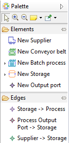
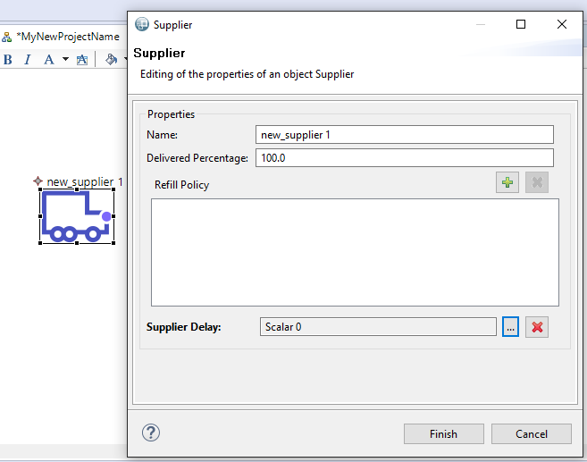
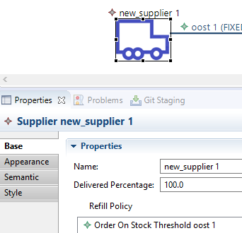
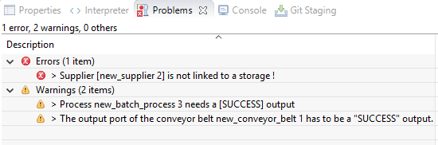
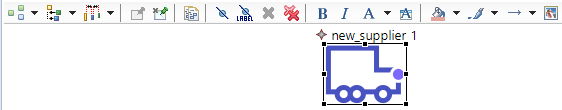

Palette tool
This tool allows you to create any element of the SimQRi model. All you have to do is to click on the element you need and then click again on a place of the modeling area on which you are authorized to place this element. As a result, the system will initialize the semantic element corresponding to the graphical element newly created in order to allow you to edit its properties.

Properties edition tool
In order to edit the properties of an element, simply double-click on its graphical representation. A new window will appear in which you will be able to edit each property of the selected element.
Another way to edit properties of elements is to click on them, go to "Properties" tab below the graphical area and select the "Base" (former "Model") subtab.


Validate Diagram
There is a functionality that allows you to check the validity of your graphical representation. Just make a right-click on the background of the modeling area and select "Validate Diagram". If there are some modeling errors, they will be specified in the "Problems" tab situated below the graphical modeling area.

Usability tools
Other tools are available in order to improve the user experience, especially in the toolbar situated above the graphical area. Just discover them !
